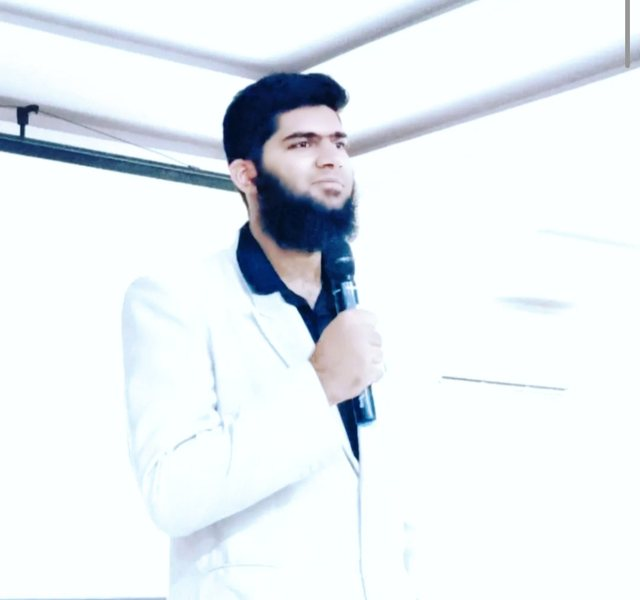
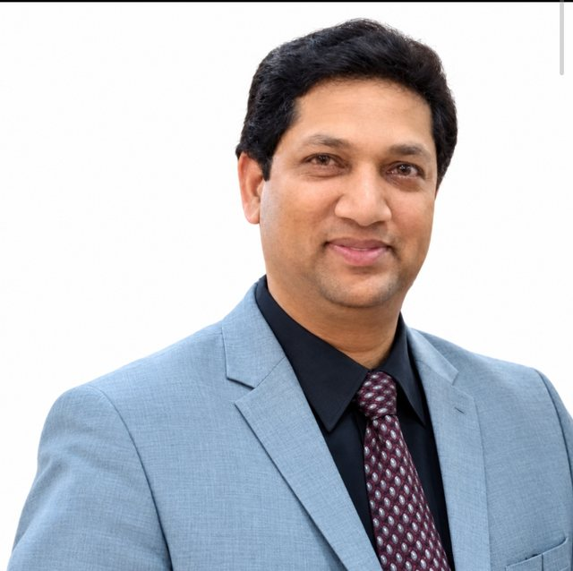

Ms. Ayesha Mehreen
Founder, Faraz Tutorial
Founded Faraz Tutorial in 1992 and has served as principal of Osmania Model School, Sublime Ideal School and Focus Institute.
Home / About us
A family-led education group in Hyderabad that pairs good teaching with technology.

Founder and CEO of MS Focus.
He is the visionary leader behind the success of Focus Institute, Osmania Model School and Sublime Ideal School. An engineer and data scientist, he has given workshops on robotics, AI, programming and science practicals at Mesco Idsarimilya MS.
MS Focus grew out of a family that has been teaching for decades.
Faraz Tutorial opened in 1992 under Ms. Ayesha Mehreen. Over the years her work expanded into Focus Institute, Osmania Model School and Sublime Ideal School. Today Mr. Mirza Mohammed Baig leads MS Focus, adding robotics, AI and programming to the classroom so students learn the tools they will use next.
To give every student a strong grounding in their subjects and the confidence to use what they know, through clear teaching, hands-on practice and modern technology, in a classroom where learning is also fun.
To grow a family of schools and learning centres where children from every background learn to think, build and lead, and where technology such as robotics and AI is part of everyday education.
Founder, Faraz Tutorial
Founded Faraz Tutorial in 1992 and has served as principal of Osmania Model School, Sublime Ideal School and Focus Institute.

Director
Co-founder and teacher
Co-founder and teacher
MS Focus works in partnership with Legacy International School.
Questions about admissions, workshops or partnerships go to the team directly.
Contact us